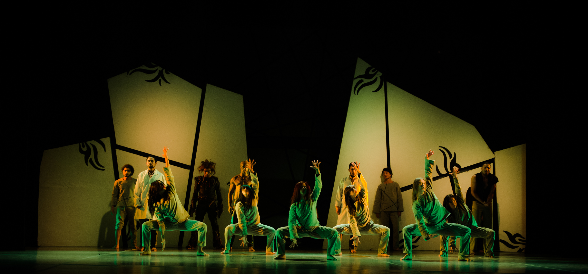

Nasce a partire dalla fine del diciannovesimo secolo, portando a un nuovo modo di concepire la danza con l'obbiettivo di distaccarsi dalla rigidità tipica del balletto classico. Predilige piuttosto movimenti lineari e naturali, spesso limitando l'uso di costumi e scenografie sfarzosi.
